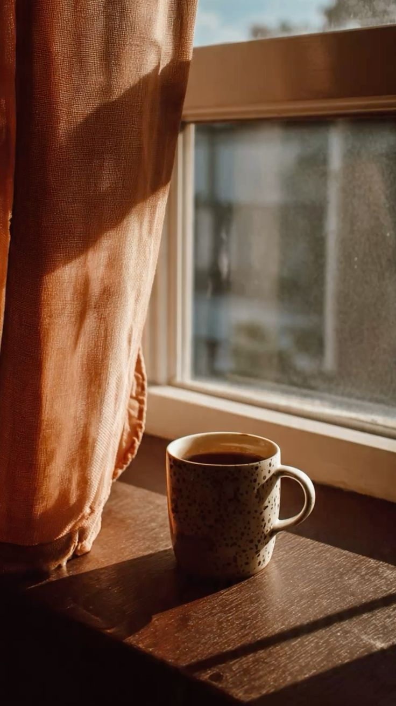
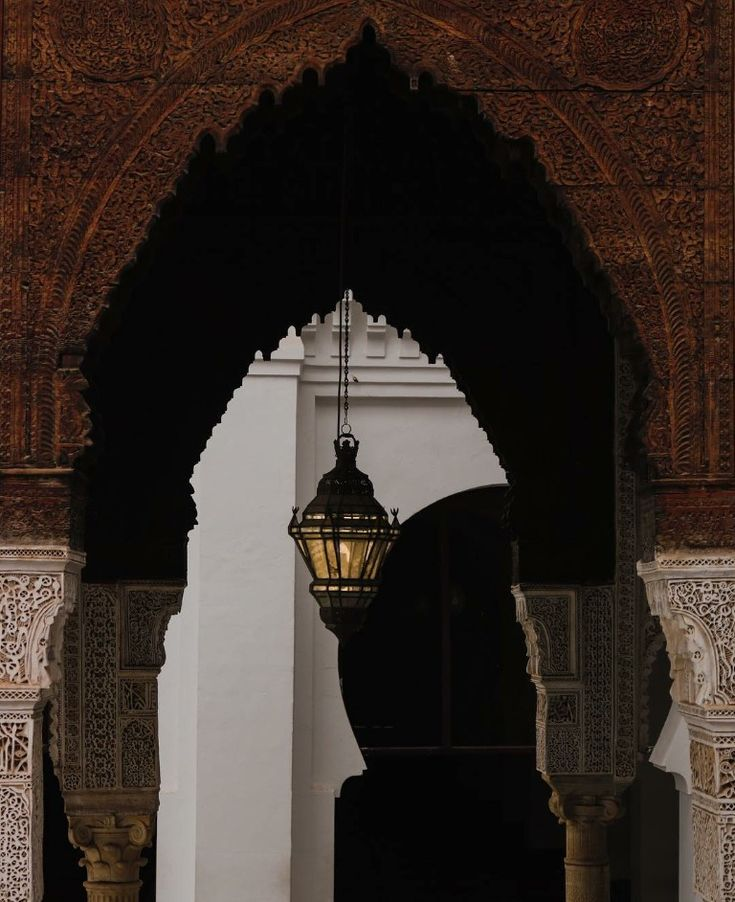

"Kuch dost tumhari zindagi mein isliye nahi aate ke tumhare saath waqt guzaarein... balki isliye aate hain ke tumhari zindagi ke har waqt ka hissa ban jaayein."
Raat ke kareeb gyarah baj rahe the.
Mohalle ki zyada tar dukaanon ke shutter gir chuke the.
Kahin door kisi chai wale ke thele par abhi bhi do chaar log baithe hue the.
Sadak par guzarti gaadiyon ki tadaad pehle se kaafi kam ho chuki thi.
Hawa mein din bhar ki garmi ab dheere dheere ghul rahi thi.
Fahad aur Qasim roz ki tarah bina kisi manzil ke chal rahe the.
Na unhe jaldi thi...
Na kisi jagah pahunchna tha.
Unke liye raat ki ye sair hi sukoon thi.
Kab galiyan peeche reh gayin...
Kab dono main road tak aa gaye...
Pata hi nahi chala.
Road ke beech bane cement ke divider par baithne ki jagah thi.
Ye jagah dono ki purani mehfil thi.
Jab bhi baatein lambi karni hoti...
Dono yahin aa kar baith jaate.
Ek taraf se gaadiyan guzarti rehti...
Doosri taraf se log.
Kabhi koi dekh kar muskura deta...
Kabhi koi ajeeb si nazar se dekh kar nikal jaata.
Magar dono ko kabhi farq nahi pada.
Qasim ne peeche haath rakh kar aasman ki taraf dekha.
"Aaj hawa mast chal rahi hai."
Fahad ne gehri saans lete hue kaha,
"Haan..."
"Aisi hawa roz nahi milti."
Dono kuch der khamosh baithe rahe.
Tabhi saamne se ek burkha pehne ladki guzri.
Qasim ne uski taraf ishara karte hue hansi rok kar kaha,
"Oye..."
"Wo dekh..."
"Burkhe wali."
Fahad ne ek jhalak dekhi.
Phir seedha saamne dekhte hue bola,
"Kahin Mahira to nahi?"
Ek pal ke liye Qasim chup raha...
Phir zor se hans pada.
"Pagal aadmi..."
"Har burkhe wali Mahira nahi hoti."
Fahad bhi hans diya.
"Achha hua tune pehchan li."
"Main to darr gaya tha."
Qasim ne uske kandhe par halka sa mukka maara.
"Tu sudhrega nahi."
Dono ki hansi kuch lamhon tak raat ki khamoshi mein goonjti rahi.
Hansi dheere dheere tham gayi.
Phir dono dobara khamosh ho gaye.
Qasim ki nazar ab bhi usi raaste par tikki hui thi...
Jidhar wo burkhe wali ja chuki thi.
Usne dheere se kaha,
"...Waise."
"Mahira yaad hai?"
Fahad ke chehre ki muskurahat halki si badal gayi.
Usne bina soche jawab diya,
"Kaise bhool sakta hoon..."
"Woh to meri bhi behen thi."
Qasim ne halka sa sir jhuka diya.
Raat achanak pehle se zyada khamosh lagne lagi.
Aur un dono ke zehan mein...
Ek saal purani yaadein dheere dheere zinda hone lagi.
Us waqt dono 11th mein the.
College ki zindagi abhi abhi shuru hui thi.
Naye chehre... naye dost... aur naye qisse har roz unka intezaar karte the.
Aur har kisi ki apni ek alag kahani thi.
Unhi dino ek WhatsApp group bana tha.
College ke students ka group.
Usi group mein Qasim ki nazar ek number par padi.
Naam likha tha...
Mahira.
Na usne kabhi uska chehra dekha tha...
Na Mahira ne Qasim ka.
Bas ek naam tha...
Aur ek number.
Ek din kaafi sochne ke baad Qasim ne himmat ki.
Usne sirf ek chhota sa message bheja.
"Assalamu Alaikum."
Kuch der baad reply aaya.
"Wa Alaikum Assalam."
Baat wahi se shuru hui.
Pehle sirf formal guftagu hoti thi.
College kaisa chal raha hai...
Assignments complete hue ya nahi...
Exams kab hain...
Aur dheere dheere...
Roz ki salaam dua aadat ban gayi.
Mahine guzarte gaye.
Baaton mein bharosa badhta gaya.
Kabhi notes ka bahana hota...
Kabhi kisi assignment ka.
Isi bahane Qasim ki Mahira se do-teen baar mulaqat bhi hui.
Lekin har baar...
Mahira burkhe mein hoti.
Uska niqab uske chehre ko poori tarah chhupaye rakhta.
Qasim ne kabhi usse ye nahi kaha...
Ke apna chehra dikhao.
Aur Mahira ne bhi kabhi khud se niqab nahi hataya.
Dono ke darmiyan ek ajeeb sa adab tha.
Jaise dono ne bina kahe hi ek had tay kar li ho.
Us daur mein Fahad ko sirf itna pata tha...
Ke Qasim kisi Mahira naam ki ladki se baat karta hai.
Roz college mein Qasim uske paas aakar nayi nayi baatein sunata.
"Aaj Mahira ne ye kaha..."
"Aaj usne notes bheje..."
"Aaj uska paper achha gaya..."
Fahad bas muskura kar sunta rehta.
Kabhi uska mazaak uda deta...
Kabhi mashwara de deta...
Aur kabhi sirf itna kehta,
"Allah barkat de."
Us waqt unmein se kisi ko bhi andaza nahi tha...
Ke ye chhoti chhoti baatein...
Ek din itni badi yaadein ban jayengi.
Ek din Qasim subah se hi kuch zyada khush nazar aa raha tha.
College ke lecture khatam hote hi woh seedha Fahad ke paas aaya.
"Shaam ko free hai?"
Fahad ne uski taraf dekh kar poocha.
"Kyun?"
Qasim muskuraya.
"Aaj mera birthday hai."
"To?"
"Mahira milna chahti hai."
Fahad hans pada.
"Achha... asal birthday to ab shuru hoga."
Qasim ne uske kandhe par halka sa mukka maara.
"Bakwas band kar... chalna hai tere saath."
Fahad ne hairani se poocha.
"Main kya karunga wahan?"
"Tu saath hoga to ghar walon ko bhi sukoon rahega... aur mujhe bhi."
Fahad ne bina kuch soche sir hila diya.
"Theek hai."
Shaam ko dono waqt se pehle hi tay ki hui jagah par pahunch gaye.
Ek chhota sa public garden tha.
Shaam dhal rahi thi.
Bachche jhule khel rahe the.
Kuch buzurg bench par baithe baatein kar rahe the.
Aur kuch families aaram se sair kar rahi thi.
Fahad jaan-boojh kar thoda door khada ho gaya.
Ye mulaqat Qasim aur Mahira ki thi...
Woh sirf apne dost ke saath aaya tha.
Kuch hi der baad...
Door se ek burkha pehne ladki dheere dheere unki taraf aati hui nazar aayi.
Qasim use dekh kar pehchan gaya.
"Mahira..."
Woh dono ke qareeb aakar ruk gayi.
"Assalamu Alaikum."
"Wa Alaikum Assalam."
Kuch lamhon ki khamoshi ke baad...
Mahira ne pehli baar Qasim ki taraf dekhte hue apne chehre se niqab halka sa hata diya.
Bas utna hi...
Jitna zaroori tha.
Qasim usse dekhta hi reh gaya.
Usne itne mahino tak sirf uski awaaz suni thi...
Aaj pehli baar uska chehra dekha tha.
Udhar...
Fahad ne apni nazar doosri taraf kar li.
Usne na dekhne ki koshish ki...
Na jaanne ki.
Uske liye ye un dono ka lamha tha.
Thodi der baad Mahira ki nazar Fahad par padi.
Woh halki si muskurayi.
"Assalamu Alaikum, Bhai."
Fahad ne bhi muskura kar jawab diya.
"Wa Alaikum Assalam."
Us din se...
Mahira ne kabhi usse naam se nahi bulaya.
Har baar sirf ek hi rishta diya...
"Bhai."
Mahira ne apne bag se ek chhota sa gift nikala.
"Happy Birthday."
Qasim ne muskurate hue packet khola.
Andar ek couple watch thi.
"Ye dekho..."
Uske chehre par bachchon jaisi khushi aa gayi.
Lekin jaise hi usne dabba khola...
Watch uske haath se phisal kar neeche gir gayi.
Tak...!
Teeno ek saath us taraf dekhne lage.
Qasim ne jaldi se watch uthayi.
Glass ke kone par ek patli si daraar aa chuki thi.
Ek pal ke liye teeno khamosh ho gaye.
Phir Mahira hansi rok na saki.
"Lagta hai gift jaldi dene ki jaldi thi."
Qasim bhi hans pada.
"Ab pehenunga phir bhi isi ko."
Fahad ne mazaak mein kaha,
"Birthday wale din hi tod di...
Record bana diya tune."
Teeno zor se hans pade.
Us waqt kisi ne us chhoti si daraar ko ahmiyat nahi di.
Shayad...
Kuch ishare us waqt samajh nahi aate.
Unka matlab insaan ko bahut baad mein samajh aata hai.
Us din ke baad...
Zindagi apni raftaar se chalti rahi.
College ke lectures...
Assignments...
Exams...
Aur un sab ke beech...
Qasim aur Mahira ki baatein bhi roz thodi thodi badhti gayin.
Dekhte hi dekhte...
Mahine guzarte gaye.
Aur phir...
Poora ek saal.
Is ek saal mein na jaane kitni mulaqatein hui.
Kabhi college ke bahar.
Kabhi kisi stationery ke paas notes lene ke bahane.
Kabhi kisi chhote se garden mein.
Aur har dafa...
Fahad un dono ke saath hota.
Lekin sirf saath.
Kabhi beech mein nahi.
Jab bhi Mahira aati...
Sabse pehle door se hi kehti,
"Assalamu Alaikum."
Qasim muskura kar jawab deta.
"Wa Alaikum Assalam."
Phir uski nazar Fahad par padti.
"Assalamu Alaikum, Bhai."
Fahad bhi hamesha ek hi andaaz mein jawab deta.
"Wa Alaikum Assalam."
Bas...
Itni hi guftagu hoti.
Na Mahira ne kabhi Fahad se be-maqsad baat ki.
Na Fahad ne kabhi zarurat se zyada lafz bole.
Ye rishta sirf ek hi lafz mein simat gaya tha...
"Bhai."
Kabhi Qasim aur Mahira baat kar rahe hote...
To Fahad thoda door jaakar khada ho jaata.
Kabhi mobile chalane lagta.
Kabhi aas-paas guzarte logon ko dekhne lagta.
Aur kabhi bina wajah aasman ko.
Usne kabhi unki tanhaai mein dakhal dena zaroori nahi samjha.
Qasim aksar mazaak karta.
"Abe idhar aa na."
Fahad door se hi jawab deta.
"Tum dono baat karo..."
"Main yahin theek hoon."
Mahira bhi muskura deti.
Shayad woh samajh chuki thi...
Ke Fahad sirf Qasim ka dost nahi...
Balki uska sachcha bhai bhi hai.
Kabhi kabhi mulaqat khatam hone ke baad...
Qasim poore raste sirf Mahira ki baatein karta rehta.
"Aaj usne ye bola..."

✦ Solitary Morning ✦
"Aaj usne mere liye dua ki..."
"Aaj usne daanta mujhe."
Fahad hans kar kehta,
"Achha hai."
"Koi to hai jo tujhe seedha rakhta hai."
Qasim hans padta.
"Bilkul Ammi ki tarah daantti hai."
Aur dono ki hansi sadak par der tak goonjti rehti.
Waqt guzarta gaya.
Yaadein banti gayin.
Us waqt un teeno mein se kisi ne bhi nahi socha tha...
Ke ek din...
Yahi yaadein unki raaton ki guftagu ban jayengi.
Ek raat...
Ramzan ke aakhri ashre ki taaq raaton mein se ek raat thi.
Poora mohalla lagbhag so chuka tha.
Magar kuch gharon ki battiyan abhi bhi jal rahi thi.
Koi Qur'an ki tilawat kar raha tha...
Koi Tahajjud mein masroof tha...
Aur koi Allah se apni taqdeer likhwa raha tha.
Us raat Fahad aur Qasim ne bhi jaagne ka irada kiya tha.
Dono ne apne apne ghar mein Isha aur Taraweeh ada ki.
Thodi der Qur'an ki tilawat ki.
Tasbeeh padhi.
Aur raat ka ek hissa Allah ke saamne guzara.
Kareeb dedh baje...
Qasim ne Fahad ko message kiya.
"Nikal?"
Do minute baad jawab aaya.
"Aa raha hoon."
Roz ki tarah...
Dono phir usi sadak par mil gaye.
Raat aur bhi zyada khamosh thi.
Na din ka shor...
Na gaadiyon ki bheed.
Sirf thandi hawa...
Aur kabhi kabhi kisi kutte ke bhonkne ki awaaz.
Dono dheere dheere chalte hue usi divider par jaakar baith gaye.
Kuch der Allah ki rehmat aur Ramzan ki fazilat ki baatein hoti rahi.
Phir achanak...
Qasim ka phone baj utha.
Screen par naam likha tha...
Mahira Calling...
Fahad ne muskurakar uski taraf dekha.
"Oho..."
"Raat ke do baje bhi yaad aa gayi."
Qasim halka sa sharma gaya.
"Chup reh."
Usne call receive ki.
"Assalamu Alaikum."
Phone ke doosri taraf se narm si awaaz aayi.
"Wa Alaikum Assalam."
Fahad dheere se Qasim ke aur qareeb aa gaya.
Phir shararat se bola,
"Aaj speaker par baat kar..."
"Mujhe bhi sunna hai tum dono kitni sharif baatein karte ho."
Qasim ne aankhen dikha kar kaha,
"Bakwas mat kar."
Fahad hans pada.
"Laga na speaker..."
"Main kuch bolunga nahi."
Qasim ne do pal socha...
Phir muskura kar phone speaker par rakh diya.
Mahira ko bilkul andaza nahi tha...
Ke uski awaaz ab do log sun rahe the.
Qasim ne bade pyaar se poocha,
"Lagta hai so gayi thi..."
"Maine pehle call kiya tha."
Mahira ne bilkul saada andaaz mein jawab diya.
"Haan..."
"Neend lag gayi thi."
Qasim halki si muskurahat ke saath bola,
"Achha..."
"Phir batao..."
"Khwaab kya dekha?"
Usne dil hi dil mein socha tha...
Shayad Mahira kahegi...
"Tum aaye the."
Ya phir koi pyari si baat karegi.
Lekin...
Doosri taraf se bina ek pal soche jawab aaya,
"Mujhe to koi khwaab hi nahi aaya."
Ek second ke liye sannata chha gaya.
Aur agle hi pal...
Fahad itni zor se hans pada...
Ke uski hansi poori khamosh sadak par goonj uthi.
"Hahahaha..."
"Abe Qasim..."
"Saara romance hawa ho gaya."
Qasim ne foran apna chehra dono haathon se chhupa liya.
"Abe chup ho ja..."
Phone ke doosri taraf Mahira ekdum khamosh ho gayi.
Do teen second baad usne hairani se poocha,
"...Ye hansi kiski thi?"
Qasim ne dheere se kaha,
"...Fahad."
Doosri taraf kuch lamhon ki khamoshi rahi.
Phir Mahira bhi hans padi.
"Aapne speaker par rakha hua tha?"
Qasim ne sharmate hue kaha,
"...Haan."
Mahira ne hans kar kaha,
"Achha hua pehle pata nahi tha..."
"Warna shayad main itni seedhi baat na karti."
Ab ki baar...
Teeno hans pade.
Raat ki woh khamoshi...
Aur usme goonjti woh hansi...
Aaj bhi dono ke zehan mein bilkul waise hi mehfooz thi.
Mahira ki hansi dheere dheere tham gayi.
Qasim ne bhi muskura kar sir hila diya.
"Achha..."
"Ab dobara meri beizzati mat karwana."
Mahira hans kar boli,
"Usme meri kya galti thi..."
"Aap hi ne sapne wala sawaal pooch liya."
Fahad phir se hans pada.
"Dekha..."
"Main akela nahi bol raha."
Qasim ne ghoor kar Fahad ko dekha.
"Bas kar."
"Nahi to agli baar speaker par nahi rakhunga."

✦ Quiet Archway ✦
Fahad ne foran dono haath utha diye.
"Theek hai huzoor."
"Ab nahi hasunga."
Teenon kuch der aur baat karte rahe.
Kabhi Ramzan ki...
Kabhi college ki...
Kabhi exams ki...
Aur kabhi bas yunhi be-maqsad.
Raat ka pata hi nahi chala.
Call khatam karte waqt Mahira ne hamesha ki tarah kaha,
"Allah Hafiz."
Qasim ne dheere se jawab diya,
"Allah Hafiz."
Phone kat gaya.
Kuch lamhon tak dono khamosh baithe rahe.
Phir Fahad ne Qasim ki taraf dekha...
Aur bas uski shakal dekhte hi phir se hans pada.
"Abey..."
"'Khwaab kya dekha?'"
Usne bilkul Qasim ki awaaz nikaalte hue kaha.
Qasim ne zor se uske kandhe par mukka maara.
"Chup kar yaar."
Fahad hans hi raha tha.
"Tu soch raha tha woh bolegi..."
"'Sapne mein aap aaye the.'"
"Lekin bechari ne seedha bol diya..."
"'Mujhe to koi khwaab hi nahi aaya.'"
Is baar Qasim bhi apni hansi nahi rok saka.
Dono itna hase...
Ke aankhon se aansu nikal aaye.
Us raat ke baad...
Ye dialogue un dono ke beech mazaak ban gaya tha.
Jab bhi Qasim zyada romantic baat karta...
Fahad bas itna keh deta,
"Khwaab kya dekha?"
Aur dono phir hans padte.
Qasim ne ek gehri saans li.
Yaad khatam hui...
Aur dono dobara usi road ke divider par baithe hue the.
Qasim halki si muskurahat ke saath bola,
"Yaar..."
"Aaj bhi yaad karta hoon na..."
"To hansi bhi aati hai..."
"Aur dard bhi hota hai."
Fahad ne uske kandhe par haath rakha.
"Kuch log chale jaate hain..."
"Lekin unki yaadein kabhi nahi jaati."
Saamne se ek naujawan couple guzra.
Ladki burkhe mein thi.
Ladka aaram se uske saath chal raha tha.
Qasim kuch der tak un dono ko dekhta raha.
Phir muskura kar bola,
"Yaar..."
"Kaash main bhi kabhi kisi ke saath aise hi chalun."
Fahad ne uski taraf dekha aur hansi dabaate hue bola,
"Pehle dusron ko ghurna band kar."
"Har guzarti burkhe wali ko dekhte rahega..."
"To Allah bhi bolega, pehle nazrein to neeche kar."
Qasim zor se hans pada.
"Achha..."
"Ab tu mujhe deen bhi sikhaega?"
Fahad muskuraya.
"Nahi..."
"Bas taang kheench raha hoon."
Qasim ne do second use dekha.
Phir achanak bola,
"Waise..."
"Teri Aamina kidhar hai?"
Ye naam sunte hi Fahad ek pal ke liye chup ho gaya.
Usne foran Qasim ki taraf dekha.
"Uska naam lena band kar."
Qasim hans diya.
"Kyun?"
"Galat kya bola?"
"Agar waise hi parde wali ladki meri bhabhi ban gayi na..."
"Qasam se..."
"Apni naslein aabaad ho jayengi."
Fahad ke chehre par halki si muskurahat aayi.
Usne aahista se kaha,
"Baat teri galat nahi hai."
"Lekin hum dono ek doosre ko us nazar se dekhte hi nahi."
"Hamare beech ek na-mehram ki bahut mazboot deewar khadi hai."
Aur woh deewar wahi rehni chahiye.
Qasim ne kandhe uchka diye.
"Teri marzi."
Kuch lamhe dono khamosh rahe.
Fahad ne ghadi dekhi.
"Abey..."
"Do bajne wale hain."
"Chal..."
"Ghar chalte hain."
Qasim uth khada hua.
"Haan..."
"Warna Ammi samjhegi fir se raat bhar bakchodi kar raha tha."
Fahad hans pada.
"Galat bhi to nahi samjhegi."
Dono divider se neeche utar aaye.
Road ab pehle se bhi zyada sunsaan ho chuki thi.
Kabhi kisi gaadi ki headlight unke chehron par padti...
Aur agle hi pal andhera wapas apni jagah le leta.
Ghar ki taraf chalte hue kabhi Qasim, Fahad ki taang kheench deta...
Kabhi Fahad uska mazaak uda deta.
Kabhi dono kisi purani baat par hans padte.
Kabhi kuch der bilkul khamosh chalne lagte.
Ye unki dosti ka tareeqa tha...
Khamoshi bhi unke darmiyan kabhi bojh nahi banti thi.
Mohalle ke mod par dono ruk gaye.
Roz ki tarah...
Aaj bhi sirf do lafz kahe gaye.
"Allah Hafiz."
"Allah Hafiz."
Qasim apne ghar ki taraf mud gaya.
Aur Fahad apne.
Us raat...
Na Fahad ko andaaza tha...
Na Qasim ko...
Ke aane wala Itwaar sirf ek chhutti ka din nahi hoga.
Us raat Fahad bilkul waise hi soya... jaise har roz sota tha.
Use bilkul andaaza nahi tha... ke aane wala Itwaar uske dil mein ek naya safar shuru karne wala hai.